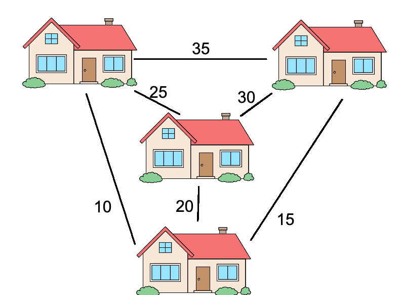
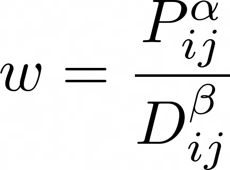
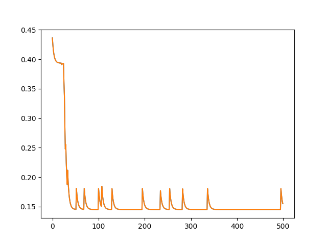
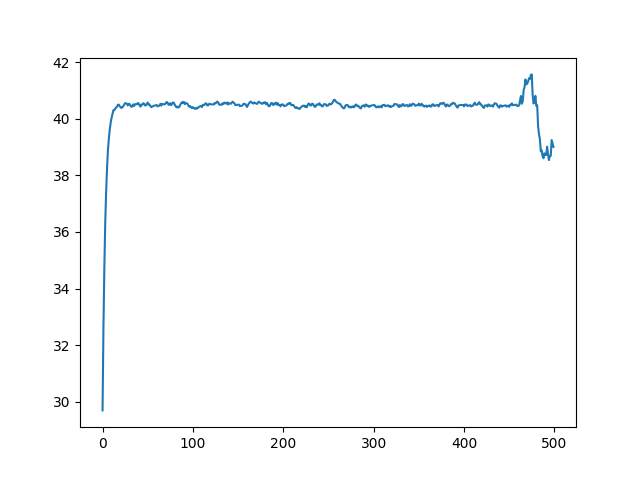

Ant Colony Optimization algorithms always intrigued me. They are loosely based in biology and the real protocols ants use to communicate and plan routes. They do this by coordinating through small pheromone messages: chemical trails they leave as they move forward, signaling for other ants to follow them. Even though each ant is not especially smart, and they follow simple rules individually, collectively they can converge to complex behaviors as a system, and amazing properties emerge.
In the computational sense, Ant Colony Optimization algorithms solve complex optimization problems for which a closed-form or polynomial solution does not exist, by trying different “routes” across some relevant space or graph, and trying to find the most efficient one (typically the shortest) from two points that satisfies some constraints.
Personally, I had a debt with myself from 5 years ago from an Algorithms III class where Ant Colony Optimization was mentioned as an alternative to simulated annealing and Genetic Algorithms, but not expanded on and left as an exercise for future study. I remember back then the concept sounded interesting, but since I was busy with other matters I decided to postpone studying it. Now I find myself having more free time, so I finally decided to give it a try. What better way to verify I learned than coding an Ant Colony Optimization algorithm from scratch and showing it here?
First, let’s start with some motivation: why would you want to learn about Ant Colony Optimization?
The Travelling Salesman Problem
One especially important use-case for Ant Colony Optimization (ACO from now on) algorithms is solving the Travelling Salesman Problem (TSP).
This problem is defined as follows: Given a complete graph G with weighted edges, find the minimum weight Hamiltonian cycle. That is, a cycle that passes through each node exactly once and minimizes the total weight sum.
Note that the graph needs to be complete: there needs to exist an edge connecting each possible pair of nodes. For graphs based in real places, this makes sense: you can just connect two places with an edge with a weight equal to their distance, or their estimated travel time.
For a concrete example, look at the following graph.

In this case, the salesman wants to visit every home once and get back to where it started. Each edge joining two houses has a numeric label, representing the travel time between them in minutes. The salesman is a busy man, and would prefer to take as little time as possible in visiting all the houses. What would be the most efficient route?
As an example, if we started from the house on the top left, we would want to go bottom, right, center, left again for a total of 80 minutes of travel. You can take a little time to convince yourself that is the right answer by hand, since this is a small case. Try to find a different route that would take less time to visit the four houses.
Why is the Travelling Salesman Problem important? Many reasons.
First, TSP appears everywhere in logistics. Imagine you need to make multiple deliveries with a truck. You have packages, each of which has to go to a different place. What is the most time-efficient order to deliver them in and then go back to the warehouse? You just found the Travelling Salesman Problem.
TSP is also important because it is an NP-Complete problem. That means in the family of NP (nondeterministic polynomial time) problems -those problems for which verification of a solution takes polynomial time, even if finding that solution is harder-, it is in the hardest category: if we found a polynomial time solution for it, then since any other NP problem can be transformed into a TSP problem (sometimes through esoteric means, but still) in polynomial time too, we would have found a polynomial solution for all NP problems.
Finding TSP can be solved in polynomial time would prove P=NP. This would be huge. To the point of being considered one of this century’s biggest questions. Suddenly swathes of hard problems would become easier to solve, and many new applications would open up, with multiple kinds of software becoming vastly more efficient. What it would do for logistics would probably contribute significantly to the world’s GDP and global trade.
Before I digress further however, now that we know what TSP is, let’s see how to solve it. For more information, I recommend the Wikipedia article on TSP.
Ant Colony Optimization: Solving TSP
There are many possible ways to solve the Travelling Salesman Problem for a given graph. As discussed above, there is no fast way to get the best solution for an arbitrary graph for certain, at least not without it taking a long time.
The trivial way to solve TSP would be to look at all the possible Hamiltonian Cycles and keep the best one. This would imply looking at all possible orderings of nodes, which grow factorially -O(N!)- with the number N of nodes. Growing factorially is much worse than growing exponentially, for any base. It is so bad that even parallelism would not help: since adding a single node makes the problem N times harder, each extra node in the graph would require we grow the infrastructure superexponentially just to keep up. This would be extremely inefficient.
Due to this, instead of looking for the exact solution for a graph, what most frameworks and solvers do is finding approximate solutions: can we find a way of connecting all nodes in a cycle that is “good enough”? To achieve this, multiple optimization algorithms exist. the Networkx framework for graphs in Python solves TSP with Christofides or Simulated Annealing, for example, of which the latter is quite similar to Ant Colony Optimization. Christofides has the nice property of never being wrong by more than 50% (so if the best cycle has a weight of 100, Christofides is guaranteed to find a cycle of weight at most 150).
The algorithm we will see today is one such way of approximating a solution.
In Ant Colony Optimization Algorithms, we will run a simulation of “ants” traversing the graph, constrained to only move in cycles, visiting each node exactly once. Each ant will leave, after finishing its traversal, a trail of pheromones that is proportional to the inverse weight of the discovered cycle (that is, if the cycle the ant encountered is twice as big, it will leave half the pheromones on each edge of the graph it went through, and so on).
Finally, though we will make ants choose which edge to go through on each step of their traversal randomly, they will assign more preference to edges with more pheromones on them, and less preference to those with less pheromones. Additionally, if an edge is longer, it will receive less preference, since it implies higher travel times.
These two preference adjustments could be linear, or any other polynomial (in my case, I tried many different coefficients and found the optimum to be sublinear for the pheromones, and quadratic or **1.5 for the distance).
The pseudocode Wikipedia gives is:
procedure ACO_MetaHeuristic is
while not terminated do
generateSolutions()
daemonActions()
pheromoneUpdate()
repeat
end procedure
For this post, I coded Ant Colony Optimization (initially proposed by Marco Dorigo in 1992 in his PhD thesis) from scratch in Python using the Wikipedia article as a reference. I then ran a few experiments with it and benchmarked it against other algorithms for different problem instances.
I used numpy for the traversals and other numerical operations, and pytest for testing. The whole code is available on GitHub, but I will show you the main parts step-by-step now. If you’re not interested in how the Ant Colony Optimization algorithm works in detail, you can skip straight to the results and benchmarks.
First, I designed a minimal Graph class, whose code I will not include here since it is quite simple. Suffice it to say that the .distance property holds an adjacency matrix with the weight -distance- for each edge.
Then I coded the traverse_graph function, which represents a single ant going through the graph one node at a time, constrained to move in a cycle.
The ant starts from a given node, and will at each step choose from among every node it has not stepped on yet, with a weighted distribution that assigns preference proportional to an edge’s pheromone load and to the inverse of its distance, each raised to a power that is a hyperparameter coefficient (alpha and beta respectively).
That is, the probability of choosing a certain edge will be proportional to:

Where P is the level of pheromones in that edge, and D the distance the edge covers. To get the distribution we sample from at each random jump, we normalize these weight coefficients so they add up to one.
After that, the optimization procedure itself consists of:
- Initialize the graph with a constant (typically initially high, to encourage exploration) amount of pheromones on each edge.
- Make k ants start from random nodes and traverse the graph using the procedure defined above.
- For each traversal, update the level of pheromones in its edges according to the function Q/total_weight, where Q is a hyperparameter (a constant) and total_weight is the sum of the distances of all the edges in the cycle. If using elitism, add to the list of traversals the best one we have encountered so far, to incentivize the ants not to deviate too far from it.
- If a cycle was found that beats the best one so far, update it.
- All pheromone levels are multiplied by a degradation constant, another hyperparameter between 0 and 1 that represents the passage of time and prevents bad past solutions to influence good recent ones too much.
- Repeat for a certain number of iterations, or until convergence.
Intuitively, this converges to short cycles because each ant is leaving more pheromones in the edges on its cycle the shorter it is and, as old pheromones fade over time, and new ants favor edges with more pheromones in them, new cycles will tend to be ever shorter. Crucially, as each ant is choosing its next step at random, even though they will tend to pick the candidates with the most pheromone every time, they will also have a non-negligible probability of picking a different edge and going off exploring. Should that lead to a better cycle overall, then that ant will tell future ants about it by leaving even more pheromones, as the cycle is shorter.
Over time, we would expect the average ant traversal to get shorter and shorter.
Additionally, I tried a few more modifications to the algorithm: the ‘elite’ or best candidate can be specified manually at the start (as that allows for reusing of the best solution from other runs) and I designed a protocol for increasing the amount of pheromones everywhere by a constant if progress stagnated -no new best cycle found after patience iterations-, though I did not achieve better results through that. Also, after running k ants, I only updated the pheromone trails with the best k/2 ants’ traversals instead of using them all. This did improve results quite significantly, as did using elite candidates –not keeping them made the algorithm more unstable and it converged a lot more slowly.
Here is the whole function in all its glory (with comments for sanity).
Some possible improvements for this algorithm that I didn’t have the time for:
- Traversals could be trivially paralllelized since each ant is independent. This can be done easily using the multiprocessing Python module, but it doesn’t work on Mac by default. In this tradeoff, I chose portability over speed.
- Choosing the next jump in a traversal can be done in parallel with numpy vector multiplication, which resulted in everything running about 5x faster. However due to numerical instability, a jump could be performed to the same node over and over, even though I was multiplying by zero, and solving this bug would have taken more time than I thought worth it. If you find a way to make this work for all cases, then feel free to make a pull request and you will get the credit and a link.
Tests and Results
After coding the algorithm and testing it in toy cases, I was happy to find that the internet had provided me with a wealth of different graphs and TSP problems to try it on.
I got my first small but real test case from this Medium Article using real Germany cities data. I was happy to see ACO found the optimal solution in seconds.
Then I found the huge Santa Claus Challenge with coordinates data representing millions of houses in Finland (for Santa to visit). The entire dataset did not fit in memory, so I could not verify how close my solution got to the best ones in the challenge, but taking ever bigger samples let me see how fast or slow each part of the program was for profiling. Go to the challenge’s article for a fun read.
Finally, my favorite resource for finding TSP problems, often with their optimal cycle’s weight, was Heidelberg University’s site.
I used that site’s Berlin dataset for most of my benchmarking and hyperparameter optimization, from which I found the best alpha and beta values to be around 0.9 and 1.5.
I was happy to see that, while Networkx’s TSP solve took 2 seconds and this program took a couple minutes, my solution for that dataset had a weight of ~44000 whereas Networkx’s was around 46k. This proves for some cases, even though slower, ACO algorithms could be a good approach for solving TSP problems.
Experiments
Encouraged by the comments in Reddit, I decided to experiment further and see how the optimization behaved in different situations.
Particularly, since ACO can be updated online, it is supposed to perform well in dynamic network or logistics problems where the graph is shifting in real time, in comparison with other algorithms which need to be re-run from scratch.
Since the ants update their pheromone trails in real time, whenever there is a shift in the edge’s distances they should eventually notice it and change their path to reflect it. For instance if two nodes got closer (the distance value in the edge joining them was reduced) then more ants should want to cross between them, and its pheromone load should grow larger. Alternatively if two nodes grow farther apart, the ants should shun them more.
To test whether this was the case, I tried two experiments. In both of them I started with the Berlin graph I had looked at earlier, which I knew the algorithm converged in after about 500 iterations of 50 ants each.
For the first experiment, after the 500th iteration I selected the edge with the highest amount of pheromones, and made its weight 10 times bigger. That is, if the edge was joining nodes i and j, then the distance between them grew 10 times larger.
I wanted to see how quickly the swarm would respond to this change, so I plotted the pheromone load for that edge from iteration 500 onwards for 500 more iterations.

As you can see, the ants don’t respond instantaneously to the changes, but after 30 iterations they have adapted to them and do not visit that edge nearly as often as before. Its pheromone level remains close to zero afterward, with occasional peaks probably due to some of the exploration incentives I set.
For the second experiment, I took a random Hamiltonian cycle and divided all of its edges by 10. This way, this cycle suddenly became tempting for the ants, as it was a cheap way of traversing the whole graph, smaller by an order of magnitude. Again this change took place in the 500th iteration, so I wanted to see how the ants reacted.
I looked at the mean pheromone load for edges in the diminished cycle, and this is what it looked like.

As expected, the ants were highly incentivized to deviate from their known paths and explore this cycle (it had a third of the weight of the next smallest cycle that the colony had found so far). After a single iteration, the average pheromone levels for that cycle had increased dramatically.
This shows that, as long as the algorithm contemplates the possibility of change by always encouraging a minimum level of exploration, new opportunities can be exploited as they arise.
Interestingly, if the minimum level of pheromones was plotted instead of the mean, it would not rise by a lot. I think this is because even after dividing by ten, a few of the edges in the best solution were still not included in this cycle. This can further be attested by the dip in average pheromone levels by the end of the graph above. I believe in the last 50 iterations a cycle was found that contained an edge that had not been diminished, but was nonetheless small enough to present an improvement.
Conclusions
We showed that Ant Colony Optimization can be implemented quite easily in Python, and since many of its operations can be vectorized or parallelized it should not be too slow, though not it is not as fast as Christofides’s algorithm or others.
More importantly, we showed that in many datasets, ACO can converge to the optimal solution, and in many others its flexibility allows it to find better solutions (shorter traversals) than simpler algorithms.
Additionally, it could be seen that one of the best properties of Ant Colony Optimization over other algorithms is its capability for online adaptation to changes in the system. In certain situations this could prove critical for performance, especially if rapid response is encouraged.
On a more philosophical level, I think it is beautiful how by specifying a large set of simple agents that each follow a few rules, we could solve a problem that is known to be hard.
I would like to try Ant Colony Optimization for problems other than TSP in the future, so if you know of any other applications where ACO shines, let me know.
If you enjoyed this article, please share it on Twitter or with a friend. I write these for you and would be happy if more people can read them and share my love for algorithms.
Suggested Further Reading
- Shake and Pull Gently, Kazimuth: This post reminded me of my love for search and optimization algorithms, and I recommend it full-heartedly.
- Reddit User /u/git’s comments on Ant Behavior and Ant Trails, which originally inspired me to write this post.
- Solving the Large-Scale TSP Problem in 1 h: Santa Claus Challenge 2020: A fun challenge and a good explanation of TSP.
- Automatic Relation-aware Graph Network Proliferation: Using Graph Neural Networks to solve, among other things, TSP.
- TSP Genetic Python: A genetic algorithm for solving TSP.